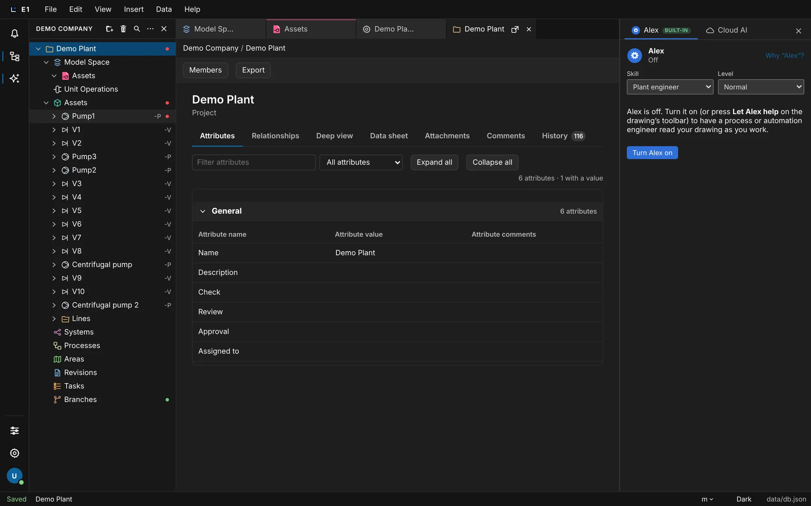

Academy / User guide / Organization, members and access
9. Organization, members and access
Your organization, invitations, licenses and seats, project members and roles, exporting the organization, and the access control being built.
About this guide
This guide covers who may do what in E1: your organization and its members, invitations, licenses and seats, organization roles and the passkey they need, the members and roles of a project and of a single drawing, what a refusal tells you, exporting the whole organization, trials, and the access control that is being built now.
Typical workflow
- Add a passkey to your account so your Owner or Administrator role takes effect: Organization roles and the passkey rule.
- Open the organization: File → Organization….
- Invite colleagues: Invitations.
- Give each person a license and watch the seats: Licenses and seats.
- Give people a role on a project: Project members and roles, or on one drawing: Roles on a drawing.
- Group people: Groups. Check what happened: Audit.
- Take everything out: Export everything….
Before you start
- All of this needs E1 with sign-in (the cloud app, or a server your company runs). Without sign-in, invitations answer Invitations need sign-in on the PostgreSQL store (E1_AUTH=oidc).
- You are signed in: Sign in.
- What you may do is always your role limited by your license: a role gives permissions, and the license caps them.
There are no screenshots of the Organization dialog yet: it only works on a server with sign-in, where the screenshots have not been taken.
The Organization dialog
One dialog holds your organization: its members with their licenses and roles, open invitations, groups, the audit log and the export. Its first lines tell you how much of the trial, the AI credits, the file storage and the seats is used.
- Where
- File → Organization…
- Who
- Owner or Administrator of the organization, with a passkey. Listing members, licenses, groups and the audit each need their own permission; the Administrator license gives only these organization permissions.
- Before you start
- E1 with sign-in; you have added a passkey (passkey rule).
Steps
| # | Action | Expected result |
|---|---|---|
| 1 | Choose File → Organization…. | A dialog Organization with the tabs Members, Groups, Audit, Export and a Close button. Members is shown. |
| 2 | Read the lines at the top of Members. | For a trial: Trial until <date>. Then AI credits: X of Y left; you have a of b left today., Files: x GB of y GB used. and the seats, for example Editor u of t · Reviewer u of t · Viewer u of t · Student u of t · Administrator u of t. |
| 3 | Look at the table. | Columns Person, License and Role. Each person has a License list, a Role list (Owner, Administrator, Member) with any other organization role written under it, and a Remove button. A license or role chosen in its list is saved at once. See Who administers the organization. |
| 4 | Click Remove on the only owner. | Refused: An organization always keeps at least one owner. |
| 5 | Press Esc, click Close, or click outside the dialog. | The dialog closes. |
Remove on a member acts at once, without asking first.
When the AI credits are used up the line reads Cloud AI's AI credits are used up (X of Y). Everything else goes on.
There is no Access tab yet. It comes with the access control under development (see Permission categories and custom roles).
The Role list gives Owner, Administrator or Member only. The dialog has no place yet to give Library administrator, Catalog maintainer or Engineering standards owner; how these are given today is not yet documented. An invitation always makes the person a Member.
Invite a colleague
Invite a person by email with the license they will get. They receive a link, sign in with that same address, and appear in your members list.
- Where
- File → Organization… → Members
- Who
- Owner or Administrator with a passkey
- Before you start
- A free seat of the license you want to give.
Steps
| # | Action | Expected result |
|---|---|---|
| 1 | Type the colleague's address in the email field (placeholder name@company.com). | The field shows the address. |
| 2 | Choose the license in License for the invitation (default Editor) and click Invite. | Invitation sent. Link: <url>. The invitation is listed under Open invitations. |
| 3 | Open the link in another browser and sign in as the colleague with that same address. | The colleague is in the organization, listed under Members with the license. |
| 4 | Invite another address and then click Cancel beside it under Open invitations. | The invitation disappears from Open invitations. |
| 5 | Type not-an-address and click Invite. | Refused: not-an-address is not an email address. |
An invitation is valid for 14 days.
When all seats of the chosen license are taken: All N Editor seats are taken. For a blocked address: E1 cannot be offered to this email address. (see Blocked email domains).
Licenses and seats
Each member has one license, which caps what any of their roles allow. Your organization has a number of seats per license. Owners and Administrators are told in the Inbox when a license is 80 % and 100 % used.
- Where
- File → Organization… → Members → the License list of a person
- Who
- Owner or Administrator with a passkey
- Before you start
- An organization with 5 Editor seats (a trial has these) and several members.
The licenses
- Editor: no cap; everything your roles allow.
- Reviewer: view, comment, approve branches, export, and use Cloud AI.
- Viewer: view and export.
- Student: like Editor, without Cloud AI and assistants.
- Administrator: organization administration only.
- No license: the person can only view.
Steps
| # | Action | Expected result |
|---|---|---|
| 1 | With 3 of 5 Editor seats used, set a fourth member's License to Editor. | The seats line reads Editor 4 of 5. Every Owner and Administrator gets an Inbox notice E1 counted the seats: 4 of 5 Editor seats are in use (80 %). |
| 2 | Give the fifth Editor license. | A new notice: 5 of 5 Editor seats are in use (100 %). Nobody else can get this license until seats are added or one is freed. |
| 3 | Try to give a sixth Editor license. | Refused: All 5 Editor seats are taken. |
| 4 | Sign in as a member who is not an Owner or Administrator and open the Inbox. | No seat notice. |
Seat notices come in the app only, never by email. A license also counts when it is given through an accepted invitation.
Organization roles and the passkey rule
Organization roles say what someone may do for the whole organization, such as managing members or the company library. The powerful roles take effect only once the person has added a passkey: until then an Owner or Administrator acts as a Member, and a Project administrator acts as a Lead engineer.
- Where
- Your roles: the initial at the bottom of the left rail → Account → card Your access. Passkeys: the same page, card Passkeys.
- Who
- Everyone, for their own account
- Before you start
- E1 with sign-in, on a device or browser that supports passkeys.
The organization roles
- Owner and Administrator: members, licenses, groups, audit and export.
- Library administrator: Edits and publishes the library, the catalog and the symbols, and keeps Alex's company knowledge.
- Catalog maintainer: Edits and publishes the catalog.
- Engineering standards owner, Member and Guest.
The Account page also says: An organization role does not edit inside a project: that takes a role on the project.
Steps
| # | Action | Expected result |
|---|---|---|
| 1 | As an Owner without a passkey, open Account and look at Your access. | The role reads acts as Member until you add a passkey, with the note Your Owner, Administrator or Project administrator role takes effect once you add a passkey below. |
| 2 | Choose File → Organization… and try to give a license. | Refused. The text ends with Your Owner role needs a passkey: add one under Account → Passkeys (your initial at the bottom of the left rail). |
| 3 | On the Account page, card Passkeys, type a name (placeholder Name, for example Work laptop) and click Add a passkey. Complete the browser's prompt. | Passkey added. The list shows Added <date> · last used <date>. A cancelled prompt shows No passkey was added. |
| 4 | Look at Your access again and repeat step 2. | The role reads Owner without the note; giving the license now works. |
Confirm it is you
For important actions E1 asks you to confirm it is you when your sign-in or last confirmation is older than 15 minutes: exporting the organization, giving or removing Owner, Administrator or Library administrator, changing an organization policy, deleting a project, removing a passkey, and exporting a restricted project. The dialog Confirm it is you offers Cancel, Sign in again and Use passkey (when you have one).
Your installation's administrator can turn the passkey rule off for an installation.
The Account page shows Your access and Passkeys only with sign-in; without sign-in it is a placeholder.
Who administers the organization
Every organization has at least one Owner. The person who starts it (for a trial: the person who accepted LANXTOR's trial invitation) is its first Owner. That is a starting point, not a decision: the Owner makes the right people Owner or Administrator and can then step back to Member. When the person who started the trial cannot do it, LANXTOR sets the administrators the company names.
- Where
- File → Organization… → Members, the Role list of each person
- Who
- An Owner gives and takes the Owner role. An Owner or an Administrator makes someone Administrator or Member. You confirm it is you (passkey rule).
- Before you start
- The person is already a member (invite them first). You have added a passkey.
The three choices
- Owner: everything an Administrator does, plus billing, the subscription, and giving or taking the Owner role. Keep at least two Owners so the organization never depends on one person.
- Administrator: members, invitations, licenses, groups, the audit and the export.
- Member: no organization administration; what they do in projects comes from their project roles.
Steps
| # | Action | Expected result |
|---|---|---|
| 1 | As an Owner, choose File → Organization…. | The Members tab lists everyone with a Role list. |
| 2 | In the row of the person who should run the organization, choose Owner in the Role list. | When your sign-in is older than 15 minutes, Confirm it is you opens first. The list then shows Owner. |
| 3 | In your own row, choose Member. | You are a Member now and the Organization dialog is no longer yours to manage. When you were the only Owner, this is refused: An organization always keeps at least one Owner: make someone else Owner first. |
| 4 | As an Administrator, choose Owner for someone. | Refused: only an Owner gives the Owner role. |
| 5 | Open the Audit tab. | Each change is listed as access.org-role-set, with who made it. |
A new Owner or Administrator acts as a Member until they add a passkey (passkey rule).
When the person who started the trial is not the right administrator and is not available, the company writes to LANXTOR (sales@lanxtor.com) naming who it should be. LANXTOR sets it; the change shows in your Audit tab as done by LANXTOR support.
Colleagues with your company's email address can also ask to join by themselves, once LANXTOR has verified your domain: see Requests to join.
Requests to join from your company's domain
Once LANXTOR has verified your company's email domain (for example acme.com) for your organization, a colleague with an address in it who signs in to E1 for the first time does not get a separate account: they ask to join your organization. An Owner or Administrator approves the request, choosing the license, and E1 sends the colleague the ordinary invitation; or declines it.
- Where
- The colleague: the E1 sign-in. You: File → Organization… → Members, section Requests to join; a notice in the Inbox (asks to join).
- Who
- Owner or Administrator with a passkey decides. LANXTOR verifies and adds the domain (write to sales@lanxtor.com).
- Before you start
- LANXTOR has added your domain. Public mail providers (Gmail, Outlook.com, …) are never a company domain. A domain and its subdomains (lab.acme.com) belong to one organization.
Steps
| # | Action | Expected result |
|---|---|---|
| 1 | As a colleague who has no E1 account, sign in with your company address. | The sign-in page says <Organization> already uses E1. We asked its administrators to let you in. When they approve, you get an invitation by email; then sign in again. No account is made yet. |
| 2 | Sign in again before anyone decided. | Your request to join <Organization> is still waiting for its administrators. … |
| 3 | As an Owner or Administrator, open the Inbox. | A notice <name> asks to join. |
| 4 | Choose File → Organization…. | On Members, above the members, Requests to join lists each person with Asked, a License list, Approve and Decline. |
| 5 | Choose the license and click Approve. | Invitation sent. Link: … The colleague gets the invitation email; signing in with its link makes them a Member with that license. The request leaves the list. |
| 6 | For another request, click Decline. | The request leaves the list. When that person signs in, they read The administrators of <Organization> declined your request to join. Ask one of them to invite you. They can ask again after 30 days. |
| 7 | Open the Audit tab. | join.requested, join.approved and join.declined. |
With your domain verified, nobody from it can start a second trial organization: LANXTOR's trial invitation is refused and points to your organization.
Only people without an E1 account ask to join this way. Someone who already has an account (for example from an earlier trial) is invited as usual. Verifying the domain yourself with a DNS record is not available yet: LANXTOR adds it.
Project members and roles
A role on a project decides what a person may do in it. The Project administrator gives roles to people or groups in the project's Members dialog. Whoever creates a project becomes its Project administrator.
- Where
- Select the project in the explorer; on the project's page click Members.
- Who
- Project administrator (with a passkey) gives and removes roles
- Before you start
- E1 with sign-in; a colleague in your organization (Ben).
The project roles
- Project administrator: Everything in the project: objects, attributes and drawings, revisions, who has access, its settings, renaming and deleting it.
- Lead engineer: Edits objects, attributes and drawings, issues revisions, approves branches and designs datasheets. Cannot change access or settings, or rename or delete the project.
- Engineer: Creates and edits objects, attributes, relations and drawings, comments, and uses the co-engineer.
- Reviewer: Views and comments. Changes nothing.
- Viewer: Views and exports. Changes nothing.
Steps
| # | Action | Expected result |
|---|---|---|
| 1 | As Anna (Project administrator), select the project and click Members. | A dialog Members of <project> with the list Roles (or No roles here yet.) and the form Give a role. |
| 2 | In Person or group (Choose a person or group) choose Ben; in Role choose Reviewer; click Give role. | The list shows Ben · Reviewer on project with Remove. |
| 3 | Sign in as Ben, open the project and drag a symbol on a sheet. | The project opens, but the move is refused. The status bar shows Change refused with You may not do this here: it needs drawing.edit on … and No role you hold here includes drawing.edit. |
| 4 | As Anna, click Remove beside Ben's role. | The role is gone from the list. |

Groups are shown in the list as <name> (group). Only an administrator sees the whole organization in Person or group; others see only the people already on the project.
Without a passkey, a Project administrator acts as a Lead engineer and cannot give roles (see the passkey rule).
Roles on a single drawing: Share and Mark as read-only
You can give someone a role on one drawing only, for example to let a subcontractor edit one sheet, or to keep others from changing a finished sheet by giving them Reviewer or Viewer on it.
- Where
- The sheet's page toolbar: Share and Mark as read-only (beside Open and Export PDF)
- Who
- Project administrator
- Before you start
- E1 with sign-in; a project with a sheet; the person is a member of the organization and holds a role on the project (Viewer is enough), or they will not see the project.
Steps
| # | Action | Expected result |
|---|---|---|
| 1 | Open the sheet's page (the one with the toolbar Open, Share, Export PDF, Mark as read-only) and click Share. | The Members dialog for the sheet, with the hint Give a person or a group a role on this drawing only. They also need a role on the project (Viewer is enough) to open it. The roles offered are Lead engineer, Engineer, Reviewer and Viewer. |
| 2 | Choose a person and the role Engineer, then Give role. | The list shows the person with Engineer on object. |
| 3 | Close it and click Mark as read-only. | The dialog with the hint To keep others from editing this drawing, give them Reviewer or Viewer on it: they can look and comment, not change it. Reviewer is preselected. |
| 4 | Give a colleague Reviewer here, then, signed in as them, try to move a symbol on that sheet. | Change refused with the permission named. |
Since 2026-11-07 a role on a drawing works inside what the person may do on the project: it no longer shows the project to someone without a role there, and it never includes managing the project. Project administrator is given on the whole project only, in Members. Sharing a drawing with someone who has no other role in the project comes back with project membership (Permission categories and custom roles).
E1 can also hold a role on a section or on one object, but the app has no place to give one yet: only the project (Members) and a sheet (Share, Mark as read-only) can be reached.
Why a change is refused
When you may not do something, E1 says so and names the permission that is missing, where it was needed, and whether your role or your license is the reason. Nothing is changed.
- Where
- The status bar (Change refused and the reason), a red line in a dialog, a read-only cell in a list (it shows the same reason), and the Comments tab
- Who
- Everyone
How to read a refusal
- Missing role: You may not do this here: it needs <permission> on <scope>. No role you hold here includes <permission>. Ask the Project administrator for a role.
- License too small: … Your <License> license does not include <permission>. Ask an administrator for another license.
- Role waiting for a passkey: the text adds Your Owner role needs a passkey: add one under Account → Passkeys (your initial at the bottom of the left rail).
- Trial ended: see Trials and the read-only lock.
- Giving a role with more than you hold: You may not give <role> here: it includes <permissions>, which you do not hold here yourself. Ask someone who holds them.
- The last one: An organization always keeps at least one Owner. or A project always keeps at least one Project administrator. Give the role to someone else first.
- Not a member: Roles are given to members of the organization; invite the person first.
Steps
| # | Action | Expected result |
|---|---|---|
| 1 | As a Reviewer on the project, rename an object. | The status bar reads Change refused with a text that names the missing permission; the name stays as it was. |
| 2 | As a person with a Viewer license and Engineer role, open an object's Comments tab. | The box is hidden: You can read this discussion; your role on the project does not include commenting. |
Groups
A group collects people so that you can give a project or drawing role to all of them at once.
- Where
- File → Organization… → Groups
- Who
- Owner or Administrator with a passkey
Steps
| # | Action | Expected result |
|---|---|---|
| 1 | Type Process team in Group name and click Create group (or press Enter). | The group is listed with a checkbox for each member. |
| 2 | Tick two members. | They are in the group; each tick is saved at once. |
| 3 | In a project's Members dialog, open Person or group. | Process team (group) can be chosen and given a role. |
Groups inside groups exist in E1, but the dialog only ticks people.
Audit: what administrators and Cloud AI did
The Audit tab lists the organization's important events, such as exports and moderated comments, and a log of what was sent to an AI model.
- Where
- File → Organization… → Audit
- Who
- Owner or Administrator with a passkey
Steps
| # | Action | Expected result |
|---|---|---|
| 1 | Open the Audit tab. | Two lists: Audit events (time · action · target) and AI audit log (time · purpose · mode · host · number of objects · bytes). Nothing can be changed here. |
| 2 | Run Export everything…, then reopen the tab. | An event for the export is listed. |
The Audit tab has no filters and no export yet; they come with access history.
Export everything of the organization
An Owner can download the whole organization in one archive: every project, record and file, and nothing from any other organization. You confirm it is you first.
- Where
- File → Organization… → Export → Export everything…
- Who
- Owner or Administrator with a passkey. Only the person who started the export can download it. Others are refused.
- Before you start
- You have added a passkey.
Steps
| # | Action | Expected result |
|---|---|---|
| 1 | Open the Export tab. | A text that starts Everything of this organization in one archive: and ends You confirm it is you first. |
| 2 | Click Export everything…. | If you signed in or confirmed more than 15 minutes ago, the dialog Confirm it is you opens: Confirm it is you to export the whole organization: use your passkey or sign in again. |
| 3 | Click Use passkey and confirm with your device. | Writing the archive…, then the file e1-organization.tar.gz downloads and The archive is ready. Download it again (x MB) is shown. |
| 4 | Open the archive. | A manifest.json, one file per table, and the attached files in files/. No data of another organization, and no sessions, passkeys or invitation links. |
| 5 | Open the Audit tab. | The export is listed. |
A long export reads The export is taking long; it goes on in the background. A failure reads The export failed.
Trials and the read-only lock
A trial gives a person a new organization of their own for 30 days. When it ends, the organization becomes read-only: everything can still be viewed and exported, but nothing can be changed until a contract is in place.
- Where
- The trial line at the top of File → Organization… → Members; the Account page
- Who
- Trials are offered by LANXTOR. Everyone in the trial organization sees its state.
What a trial includes
- 30 days; 5 Editor seats (the owner takes one), 5 Reviewer and 5 Viewer seats.
- 18 000 AI credits, with a daily limit per person (Editor 600, Reviewer 150). Premium models are Not included in a trial.
- 5 GB of files.
Steps
| # | Action | Expected result |
|---|---|---|
| 1 | During the trial, open File → Organization…. | Trial until <date>. |
| 2 | After the end date, open the dialog again. | The line is red: The trial ended on <date>: this organization is read-only. Everything can still be viewed and exported. |
| 3 | Rename an object. | Refused: The trial of this organization ended on <YYYY-MM-DD>, so it is read-only now: everything can still be viewed and exported. Contact LANXTOR to continue. |
| 4 | Open Account. | The trial of this organization has ended: everything is read-only, and can still be viewed and exported. |
| 5 | Export a sheet PDF or the organization. | The export works. |
LANXTOR's own staff invite to a trial from the Organization dialog (Invite to a trial, with Their organization (optional)). Anyone else trying gets Trial organizations are offered by LANXTOR only.
After the end everyone is limited like a Viewer license. LANXTOR lifts the lock when a contract is entered.
Blocked email domains
Some email domains cannot be given E1: no account, trial, invitation or license. The list is kept by LANXTOR and includes subdomains.
- Where
- You meet it at sign-up and sign-in, and when inviting or giving a license in the Organization dialog
- Who
- Applies to everyone; the list is kept by LANXTOR
Steps
| # | Action | Expected result |
|---|---|---|
| 1 | Invite an address on a blocked domain. | Refused: E1 cannot be offered to this email address. |
| 2 | Sign in with an address on a blocked domain. | This email address cannot be used with E1. If you think this is a mistake, write to sales@lanxtor.com. |
An invitation sent before a domain was blocked can no longer be accepted.
Permission categories and custom roles
You will be able to see every permission in plain words, grouped by category, and make your own roles, for example an Engineer who may not delete drawings.
Being built now (work order of 2026-11-07). The labels below are the planned ones and may still change. The Organization dialog gets the tabs Members, Access (with Roles, Groups and Assignments), Audit and Export, and Project settings gets an Access section.
What you will be able to do
- Open Organization… → Access → Roles and see each role's permissions as check boxes in categories: Organization administration; Projects; Objects and attributes; Drawings; Documents and revisions; Comments, tasks, and markups; Library: classes, attributes, and rules; Symbols; Catalogs; Rules and checks; Co-engineer and assistants; Branches; Integration.
- Read each permission's name and a sentence about it, and search them.
- Copy a built-in role to a custom role: for example copy Engineer, untick Delete diagrams, save it as "Engineer (no deleting)" and give it to a group. A member who then deletes a sheet is refused, and the refusal names the permission.
- New separate permissions for creating and deleting drawings, assigning responsibility, and editing each kind of library content.
Assign to…: objects a person or group is responsible for
You will be able to make a person or group responsible for objects, folders, sheets or sections. Others then see those objects as read-only, with the reason and a way to ask the responsible person.
Being built now (work order of 2026-11-07). Labels are the planned ones.
What you will be able to do
- Right-click an object, folder, sheet or section: Assign to…, Take responsibility, Release.
- See a badge with the person's initials or a group icon in the explorer, and "Responsible: …" in the object window.
- As someone else, find those objects read-only with the reason "X is responsible for this object" and an Ask X button. Moving or connecting a line to a protected object is refused.
- Add a Responsible column to a list and filter it by Assigned to me.
- As an Engineer, take an object nobody is responsible for. A Project administrator reassigns an object before editing it.
Access history and audit export
You will be able to see every change to groups, roles and assignments with before and after, see who had access on a given date, and export it for an audit.
Being built now (work order of 2026-11-07). Labels are the planned ones.
What you will be able to do
- Open Organization… → Access → Access history, filter it, and use Show access on a date.
- Export the history and the current access report to Excel or CSV.
- Filter and export the Audit tab.
- See a project's access history under Project settings → Access → History.
Company single sign-on and directory sync
Your colleagues will sign in with the company account and appear in E1 from the company directory. A first part, signing in with a company Microsoft account, is already available.
Planned (in parallel to the main milestones). Delivered on 2026-11-07 as a first part: Sign in with your company's Microsoft account, after LANXTOR has connected your company's directory. Other sign-in standards and directory sync come later.
What you will be able to do
- Sign in with your company account through single sign-on.
- See new colleagues appear in E1 from the company directory.
With Microsoft sign-in today, a person becomes a member of the organization and gets the default license only while a seat is free. Owners and Administrators still need a passkey.
Tokens, service accounts and agents
Other systems and agents will reach E1 through their own accounts and tokens, each with its own access, instead of a person's sign-in.
Planned (in parallel to the main milestones), not started.
What you will be able to do
- Create a service account or an agent token in settings and see it listed with its access.
- Create an access token and run a command through the integration API.
Discipline permissions, four-eyes approval and support access
Finer control for larger teams: roles limited to one discipline, a second approver for important merges, and support access that you approve for a limited time.
Planned (in parallel to the main milestones), not started.
What you will be able to do
- Limit a role to one discipline's attributes.
- Require a second approver on merge requests.
- Approve a time-limited support access request.